Cómo gestionar un permiso
Para poder continuar el proceso de aprobación de un permiso, desde el panel principal, podremos ingresar a la opción Permisos, donde visualizaremos el listado de permiso, localizamos el permiso.
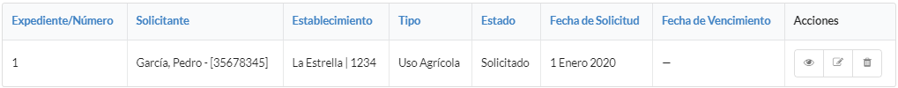Nos dirigimos al icono inspeccionar, para ver en detalle el estado del permiso.
 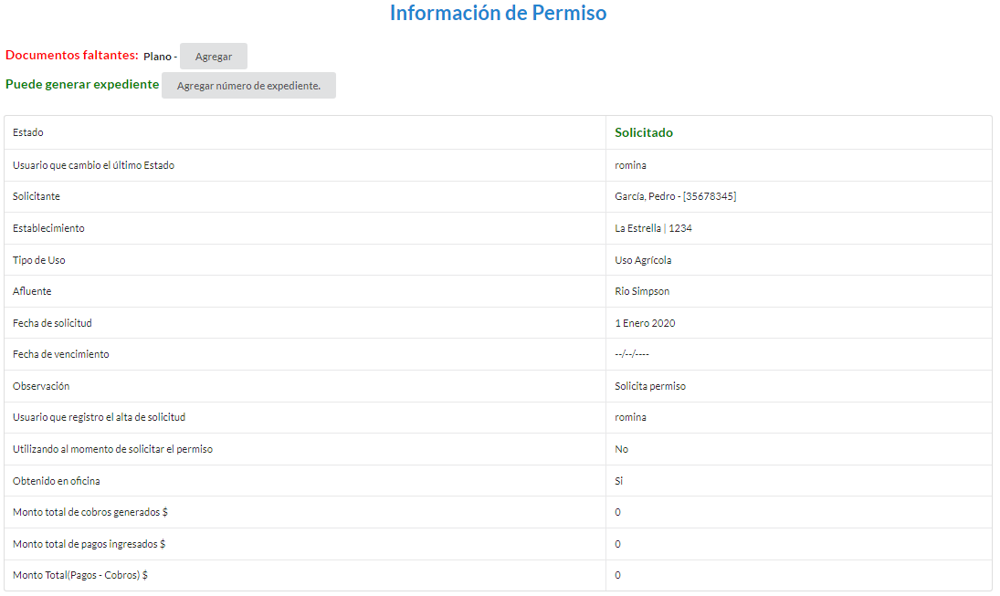
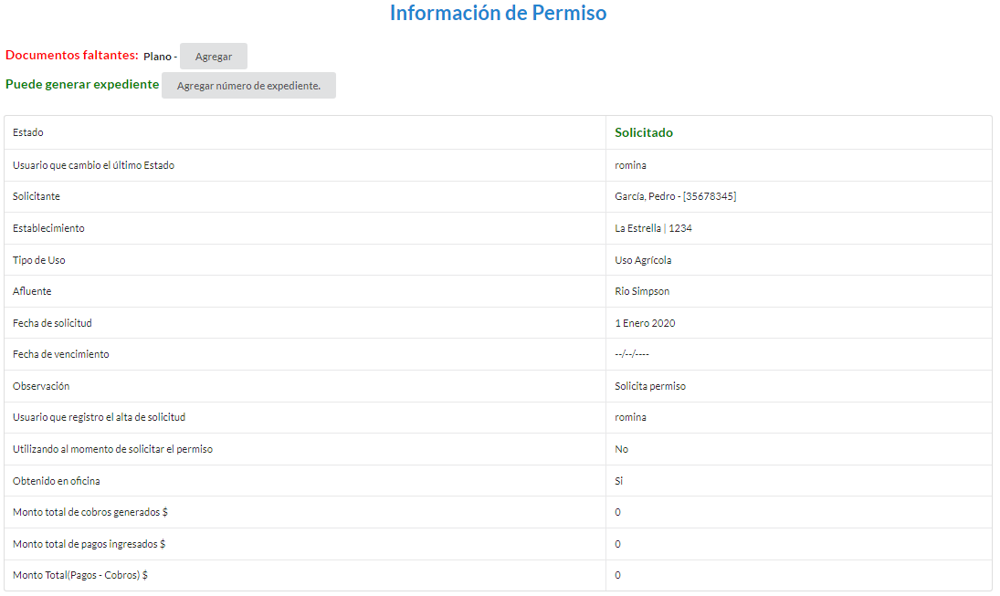
Agregar Documentos
Debemos completar toda la documentación faltante, que se especifica debajo de Documentos faltantes:, cuando contemos con alguna información faltante, debemos dirigirnos al botón Agregar.
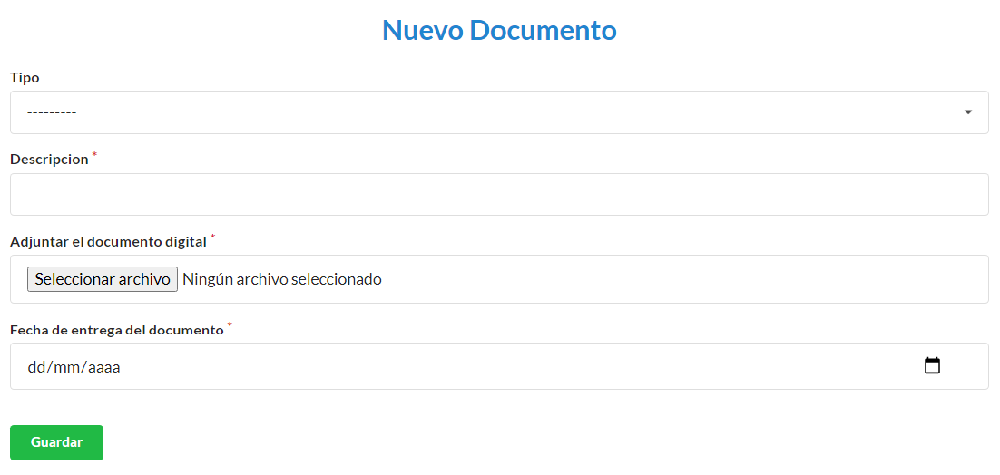Para ingresar un documento, en la pantalla deberá completar los campos Tipo (para éste caso, aparecerá un desplegable con los documentos faltantes), Descripción, Adjuntar el documento digital (Se nos abrirá un explorador de archivos, en el cual debemos ubicar el archivo del documento a subir), Fecha de entrega del documento (Se registrará la fecha en que fue entregada la documentación). Completados los campos se podrá Guardar.
Completada toda la documentación requerida, nos encontraremos con éste mensaje. El visado es el trámite legal donde se corrobora que el documento presentado sea el correcto.

Visar Documentos
Para realizar el visado, debemos ir al botón de Documentación, y encontraremos el listado de los documentos presentados, con la descripción de el estado en que se encuentra cada uno.

El botón de Acción nos presentará un desplegable con las opciones disponibles:
Rechazar en caso de que el documento presente algún error. Visar en caso de que el documento sea correcto. Modificar en caso de que se necesite hacer un rectificación sobre el documento en cuanto a los datos cargados. Eliminar en caso de error en la carga.

La acción de Rechazar es para cuando un documento no cumple con los requisitos o no sea válido. Ésta acción cambia el estado del permiso a Revisado.
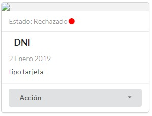La acción de Visar es para cuando el documento es correcto. Ésta acción puede cambiar el estado del permiso a Visado.

La acción de Modificar nos abrirá una nueva ventana, donde podremos modificar todos los datos. Ésta acción no cambia el estado del permiso.
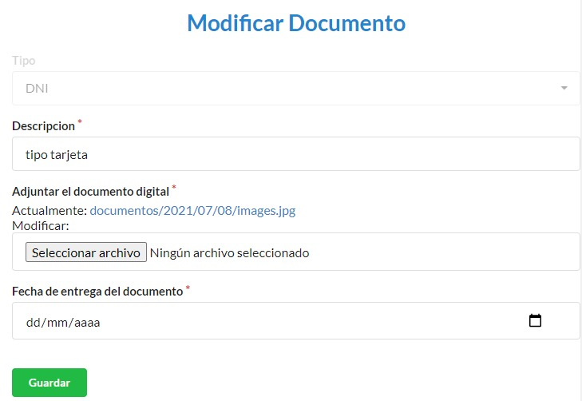La acción de Eliminar es para cuando se desea borrar el documento presentado, nos preguntará si estamos seguros de realizar esta acción. Ésta acción no cambia el estado del permiso.
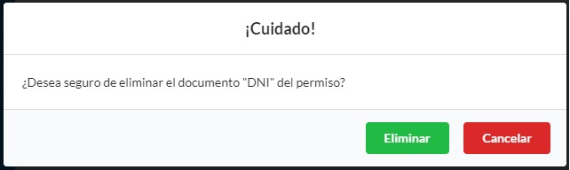Agregar Expediente
Cuando la toda la documentación está cargada y visada, dentro del permiso nos encontaremos con un cartel DOCUMENTACION COMPLETA y un botón que nos pedirá que ingresemos el número de expediente.
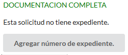Para terminar de ingregar el número de expediente, debemos completar Descripción, Archivo, Fecha del documento, Número de expediente

Agregar Edicto
Leugo de ingresado el expediente, se debe generar un edicto, el cual debe ser publicado dentro del boletín oficial y en al menos 1 diario local.

Debemos completar Descripción, Archivo, Fecha del documento, Tiempo de publicación (en días)

Mientras estemos dentro de los días de publicación, puede que lleguen oposiciones o en caso de que no existan se realiza la resolución para otorgar el permiso. Tendremos la opción de Agregar Resolución o Agregar Oposición

Agregar Resolución
Debemos completar Descripción, Archivo, Fecha del documento (fecha de documento resolución), Unidades (cantidad de en la unidad de medida declarada en la resolución), Fecha del primer cobro (nos aclara la fecha máxima del cobro), Fecha de vencimiento.

Luego de agregada la resolución el Permiso se encuentra Otorgado
Agregar Oposición
Debemos completar Descripción, Archivo, Fecha del documento.
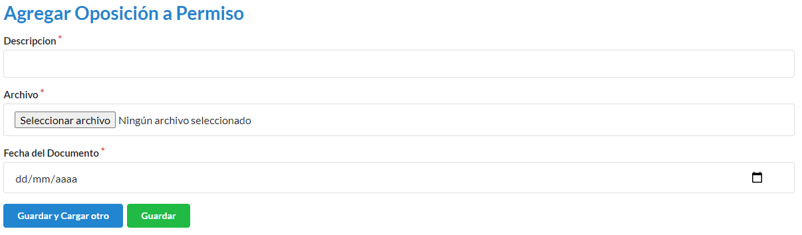Como crear un nuevo establecimiento
Para ingresar un nuevo establecimiento, en la pantalla deberá dirigirse a Establecimientos

Luego nos dirigimos a Nuevo Establecimiento

En el formulario debemos completar los campos Dueño (este debe ser el solicitante), Código catastral, Superficie (esta sera tomadas en m2), Nombre (nombre del establecimiento), Descripción. Los campos con * son obligatorios. Completados los campos se podra Guardar.

Como crear un nuevo tipo de uso
Para ingresar un nuevo tipo de uso debemos ir a la opción Tipo de Uso
Luego nos dirigimos a Nuevo Tipo de Uso
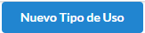En el formulario debemos completar los campos Descripción (este sera el nombre del tipo de uso), Coeficiente (este puede ser un numero real), Periodo (para este caso, aparecera un desplegable con los periodos vigentes), Medida (para este caso, aparecera un desplegable con los periodos vigentes), Tipo de modulo (para este caso, aparecera un desplegable con los tipo de modulos vigentes), Documentos requeridos (para este caso, aparecera un desplegable con los documentos vigentes. Pueden tener mas de 1 documento asignado). Los campos con * son obligatorios. Completados los campos se podra Guardar o Guardar y Cargar otro.
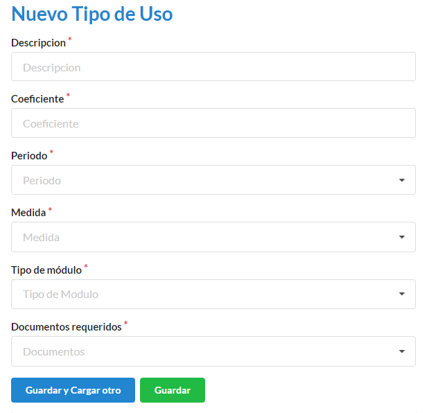Como crear un nuevo tipo de documento
Para ingresar un nuevo tipo de documento debemos ir a Tipos de Documentos.

Luego nos dirigimos a Nuevo Tipo de Documento.
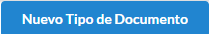En el formulario debemos completar los campos Nombre.